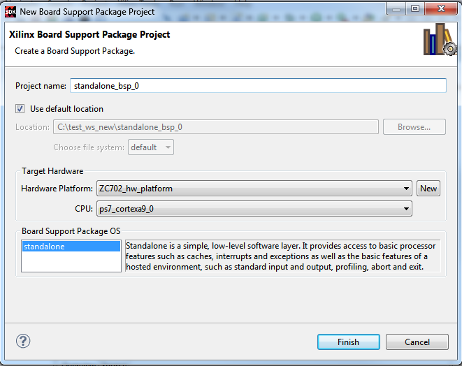

Select File > New > Board Support Package to open the New Board Support Package Project dialog box. In this dialog box, specify a name for the project and select the CPU processor and Board Support Package OS.
You can also specify a location for your project by unselecting the Use default location checkbox and type or browse to the new path in the Location field.

The New Software Platform Project page contains the following items:
Name |
Function |
|---|---|
Project name |
Specify a name for the project. |
Use default location |
When this check box is selected, SDK creates the new project in the default workspace location. |
Location |
If Use default location is not selected, specify the location where the project is to be created. |
Hardware Specification |
Specify the hardware platform specification file if it has not been defined. |
CPU |
Select the processor for which you want to build the BSP. |
Board Support Package OS |
Select the BSP type from the available BSPs for the processor. |